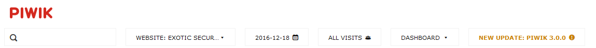
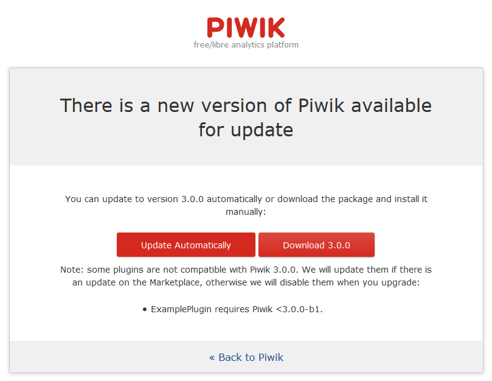
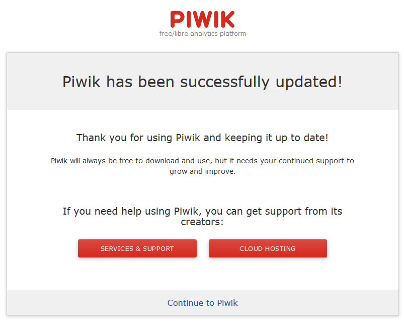
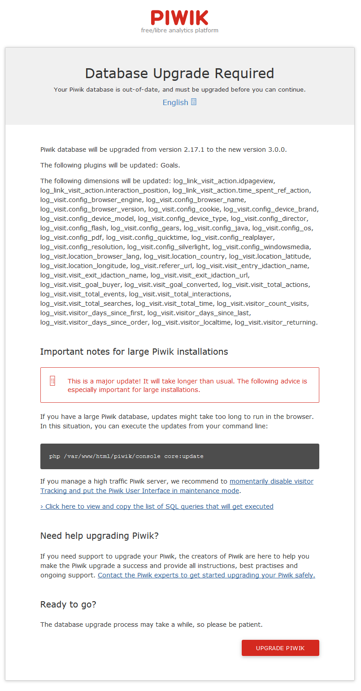
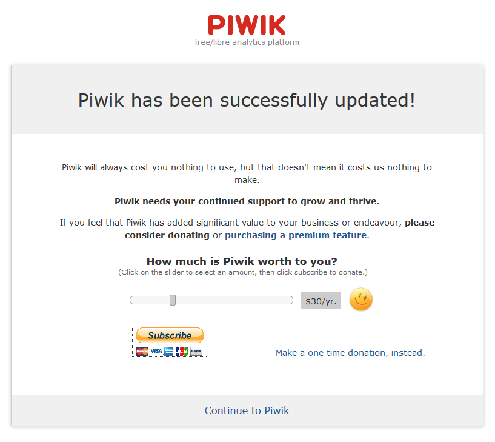
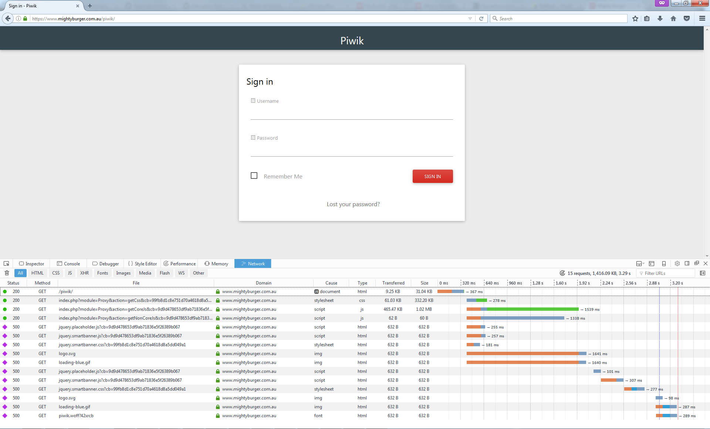
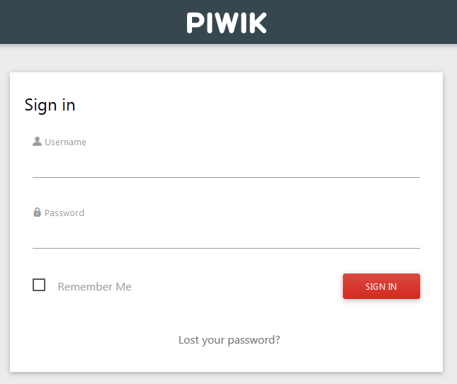
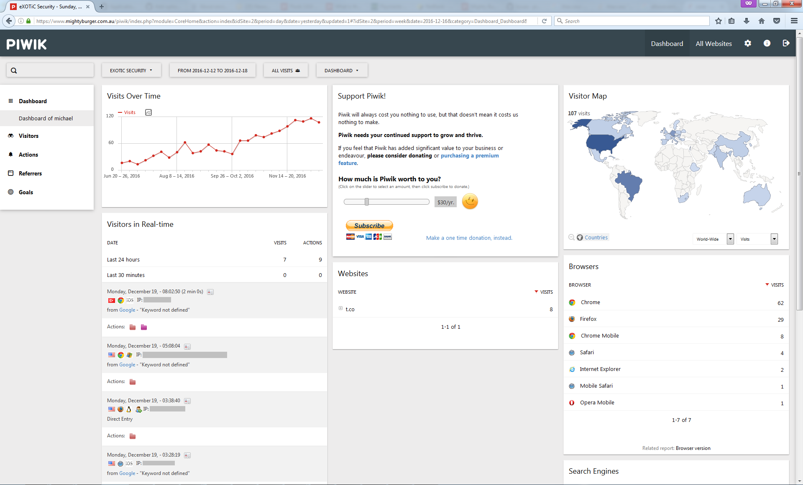

Piwik have just announced the release of Piwik 3.0 and I was excited to try it out. I've been running Piwik on this site for just over a year. I like Piwik because it allows me to run analytics1 on this site while respecting users privacy, giving users the option to opt-out2 of tracking and it means I don't share their data with a 3rd party like Google.
The upgrade was fairly seamless.
When I logged in there was a notification saying an update was available.

I clicked on the update link to update and selected "Update Automatically"

After about 10 seconds I got a message saying the update was successful

Then I had to upgrade the database, as this is a very low traffic site I decided to upgrade in the browser

The update finished and I continued on to piwki

Only when I reloaded the page I was getting 500 server errors

Looking in /var/log/apache2/error.log I saw a number of errors saying:
/var/www/html/piwik/plugins/.htaccess: Options not allowed here
I found that the .htaccess file in the plugins directory had a line at the end
Options -Indexes
That line stops people getting a directory listing of the files in the plugins folder, so it's an important security feature.
I edited my apache2 config and changed my AllowOverride setting from
<Directory /var/www/html/piwik>
AllowOverride FileInfo Limit AuthConfig
</Directory>
to
<Directory /var/www/html/piwik>
AllowOverride FileInfo Limit AuthConfig Options=Indexes
</Directory>
After that Piwik loaded up with no erros.

I've had a bit of a play with it and I think the new dashboard looks nice.

One of the features I've been tracking and looking forward it is the change from md5 hashes to bcrypt so it's great to see that's landed in the 3.0 release.